Unix-高级IO
非阻塞IO
将描述符设置为非阻塞 IO 的方法：
- 调用 open() 时，指定 O_NONBLOCK 标志
- 若描述符已经打开，可调用 fcntl() 并将文件状态标志只为 O_NONBLOCK。
1 |
|
记录锁
记录锁可以以字节为单位锁住文件的一部分。
不同 Unix 系统所支持的加锁方式：
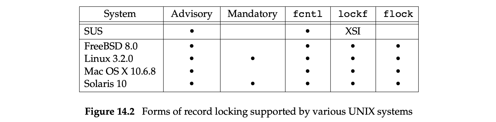
fcntl 记录锁
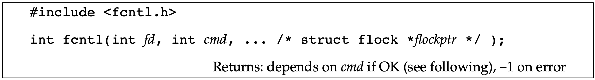
1 | struct flock { |
参数说明：
cmd：取值为 F_GETLK, F_SETLK, or F_SETLKW。
- F_GETLK：若锁存在，则获取锁失败，并存在的锁信息将重写 flockptr 中的内容；若锁不存在，flockptr 中出了 l_type 被设置为 F_UNLCK 外其他内容不变。
F_GETLK 命令不能用来检测本线程是否持有锁。 - F_SETLK：设置由 flockptr 所描述的锁。当不满足加锁规则时，fcntl 将会立即返回，并将 error 设置为 EACCES 或 EAGAIN。
该命令也可以通过设置 l_type 为 F_UNLCK 来清除 flockptr 描述的锁 - F_SETLKW：F_SETLK 的阻塞版本。当与其他进程存在锁竞争时陷入休眠（当锁可用时或被信号终端时被唤醒）。其中 W 表示 wait
函数说明：
- 锁的起始位置可以超过当前文件的结束位置，但不能在文件开始位置之前加锁。
- l_len 为 0 时，表示锁的范围可以扩展到最大可能的范围。可以锁住从起始位置（可以是文件任意位置）开始到文件末尾的内容以及未来追加的文件内容。
- 锁整个文件：l_start = 0； l_whence = SEEK_SET；
同一个进程若对某段文件内容加锁后，再次加锁，新加的锁将会替换旧锁。如当前进程在文件第 16-32 字节上加了写锁，之后又在相同的位置添加了读锁，那么写锁将会被替换为读锁。
但是多进程之间的加锁规则应满足如下图所示规则：
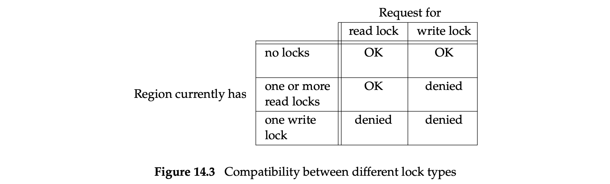
在加锁写锁前应该在打开该文件时指定读写的权限：读锁（读权限），写锁（写权限）。
锁的分裂与合并：
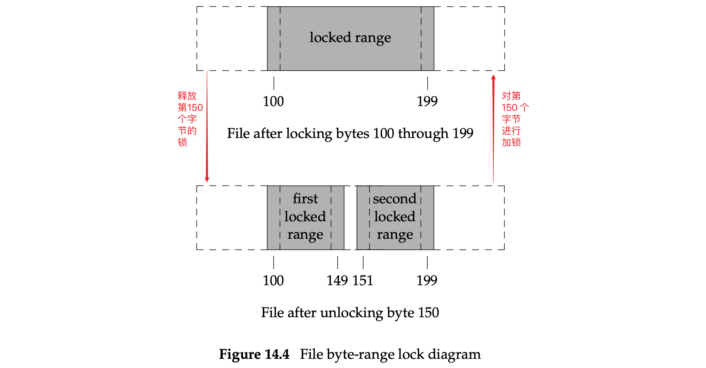
锁的隐含继承与释放：
锁的隐含继承与释放应满足如下三条规则：
锁是与某个进程和某个文件相关联的。
这表现在：一是当进程终止后，它的所有锁将被释放；二是：当描述符关闭时，该进程引用的该文件上的所有锁都将被释放。1
2
3
4
5
6
7
8
9
10fd1 = open(pathname, ...);
read_lock(fd1, ...);
fd2 = dup(fd1);
close(fd2); // 会释放在 fd1 上加的锁
fd1 = open(pathname, ...);
read_lock(fd1, ...);
fd2 = open(pathname, ...)
close(fd2); // 会释放在 fd1 上加的锁- fork 后的子进程并不会继承父进程的锁。
锁本身就是防止多进程出现并发问题的，若父子进程共享同一把锁，会有并发问题。 - 当不设置 close-on-exec 标志时，调用 exec 后的程序会继承锁
FreeBSD 的实现
1 | fd1 = open(pathname, ...); |
上述代码的锁结构对应下图所示：
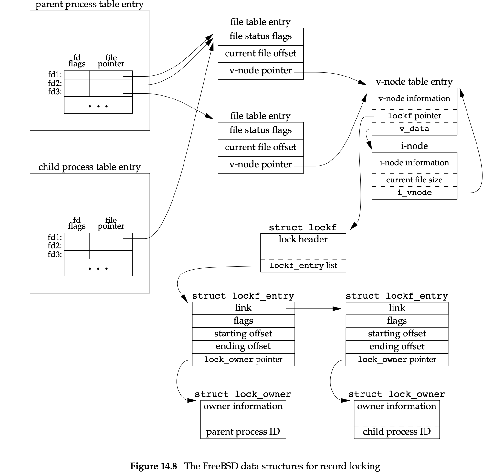
1 | // 给整个文件上写锁 |
锁文件结尾时应注意的地方
1 | writew_lock(fd, 0, SEEK_END, 0); // 锁住文件追加内容 |
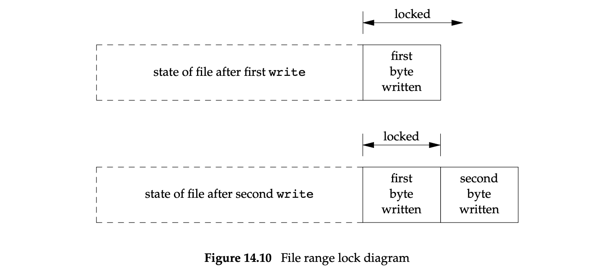
解决办法是解锁是将长度设置为 -1。
建议性锁（advisory locking）和强制性（mandatory locking）锁
在数据库使用相关的库来访问例程中，若库中的所有函数以一致的方式来处理记录锁，那么任何使用这些函数访问数据库的进程集合都是 合作进程 。不使用该库中的函数就对数据库文件进行访问的进程称为 非合作进程。
如果这些数据库访问函数是唯一访问数据库的入口的话，那么这些函数是可以使用 advisory 锁的。
但 advisory 锁并不能阻止其他有权进程写入数据库文件。
使用 mandatory 锁时，内核会检查每个 open()、read()、write() 是否会违反锁规则。
在 Linux 中使用 mandatory locking 需要在 mount 命令中使用
-o mand选项开启。
对于开启 set-group-ID 位且关闭 group-execute 位的文件（当 group-e execute 位关闭时 set-group-ID 位将无意义，可以用来表明该文件是一个 mandatory locking）来说，mandatory locking 自动启用。
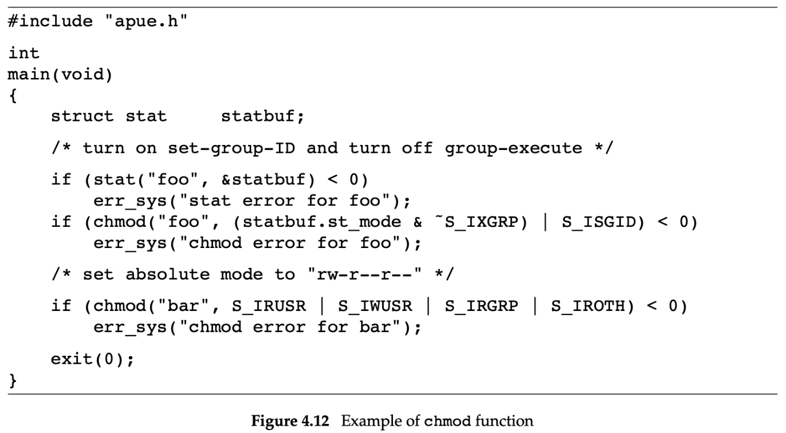
使用 mandatory locking 时，读写锁的兼容规则：
read() & write()
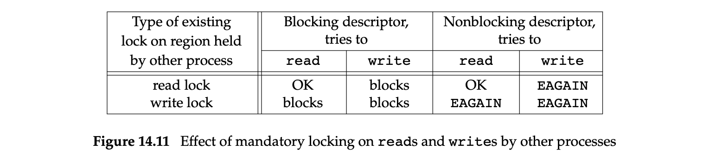open()
调用 open 函数时指定了 O_TRUNC 或 O_CREAT 标志时，无论是否指定了 O_NONBLOCK ，open 函数将立即返回出错，errno 置为 EAGAIN。除此之外 open 函数都是可以正常调用。
注意
- 在使用 mandatory locking 时，即使出现读写锁冲突时，通过 ed 命令仍然是可以修改文件。
ed 命令将文件内容先临时存在一个临时文件中，然后替换旧文件。mandatory locking 对 unlink() 无影响。
- vi 命令可以读取文件内容，但不能修改。
- 在 Korn shell 中，重定向符
>以及>>将失败，并报 “cannot create” 错误。 - 在 Bourne shell 中
>会报错，>>只是阻塞直到 mandatory locking 移除。这主要是因为：Korn shell 在 open() 时同时指定了 O_CREAT 以及 O_APPEND 标志，而 Bourne shell 并没有指定 O_CREAT
示例
1 |
|
1 |
|
1 |
|
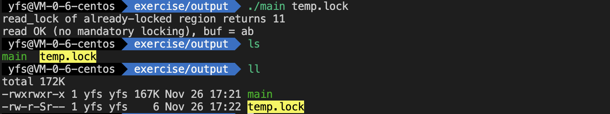
EAGAIN: 11, try again
EACCES: 13, Permission denied
IO 多路复用
select() 和 pselect()
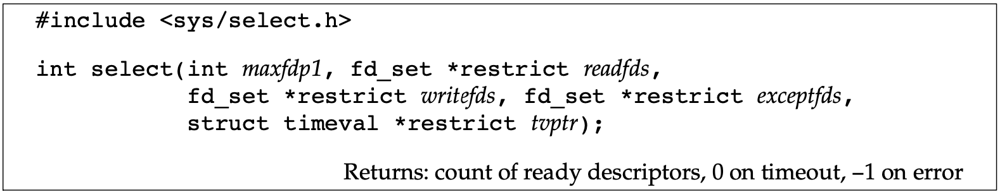
描述符是否阻塞与 select 函数是否阻塞并无关系。对于非阻塞描述符，可以将 select 的超时时间设置为 5s，5s 之内没有就绪，仅阻塞 5s。若超时时间设置为一个无限大的数字，select 函数将会一直阻塞直到就绪或者捕捉到信号。
参数说明：
| tvptr | 取值 | ||
|---|---|---|---|
| NULL | 永远等待（可被信号打断）。当描述符就绪或捕捉到信号（返回 -1，errno 设置为 EINTR）时函数返回。 | ||
| tvptr->tv_sec == 0 && tvptr->tv_usec == 0 | 不等待立即返回。以轮询的方式找出不阻塞的多个描述符 | ||
| tvptr->tv_sec != 0 \ | \ | tvptr->tv_usec != 0 | 等待指定的时间。当某个描述符就绪后或者等待超时（返回 0）后返回 |
select 调用返回后，在 Linux 中会将剩余的未超时时间通过 tvptr 参数返回。
| 参数 | 说明 |
|---|---|
| readfds | 指向可读描述符集合 |
| writefds | 指向可写描述符集合 |
| exceptfds | 指向异常条件描述符集合 |
当中间三个条件参数为空指针时，select 相当于一个能够提供高精度的 sleep()。
关于数据类型 fd_set
fd_set 可以看作是一个 bit 数组，每个描述符占一个比特位。
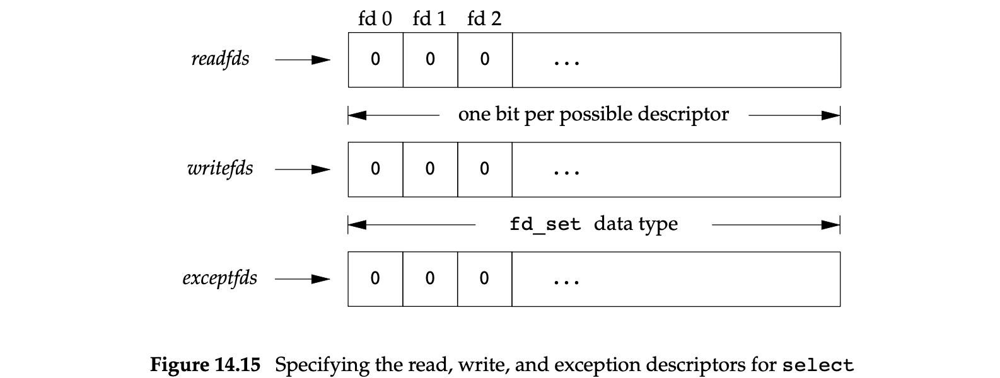
fd_set 允许的运算符操作
- 同类型赋值
- 调用如下函数

| 函数名 | 作用 |
|---|---|
| FD_ZERO | 将 fd_set 清零 |
| FD_SET | 设置某一比特位 |
| FD_CLR | 清除某一比特位 |
| FD_ISSET | 是否启用某个比特位 |
在使用 fd_set 时，应先调用 FD_ZERO 将其清零，然后使用 FD_SET 为感兴趣的描述符设置比特位。
参数 maxfdp1 是 readfds、writefds、exceptfds 三个集合的描述符个数之和 + 1，它指定了在内核检查启用比特位的范围。通常该值为 FD_SETSIZE（一般是 1024，定义在 sys/select.h 中）。一般按需定义自己的 maxfdp1，以避免性能浪费。
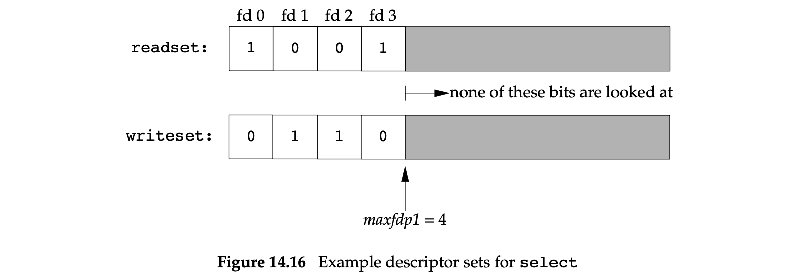
返回值说明
| 返回值 | 描述 |
|---|---|
| -1 | 出错返回。如在描述符就绪前捕捉到信号。描述符集合不会被修改 |
| 0 | 无描述符就绪。一般是超时后返回。所有描述符集合将被清零 |
| 正数 | 三个描述符集合中总的就绪描述符的数量。若同一个描述符在不同集合中出现多次，则按多次统计。集合中保留就绪的描述符 |
关于描述符就绪的说明
- readfds 中的描述符就绪指的是 read 函数不再阻塞
- writefds 中的描述符就绪指的是 write 函数不再阻塞
- exceptfds 中的描述符就绪指的是对应描述符挂起了某个异常条件。异常条件主要有：网络连接中达到了带外数据；packet 模式的伪终端发生了某种条件。
- 对于普通文件的描述符总是返回就绪
select 函数的变种函数： pselect()
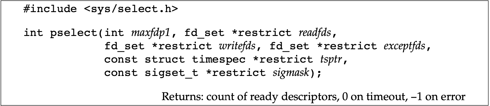
pselect 与 select 的不同点（除此之外都相同）：
| 不同点 | pselect | select |
|---|---|---|
| 超时参数数据类型 | timespec，可指定秒、纳秒 | timeval，可指定秒、毫秒 |
| 超时参数的修饰符 | const，调用前后超时参数值不变 | 调用前后超时参数保留剩余未超时时间 |
| sigmask 参数 | 以原子性方式安装自定义信号屏蔽字。若为 NULL，则对信号的处理与 select 相同。返回时 sigmask 恢复原先的屏蔽字 | 无 |
函数 poll()
当某个描述符被挂起后（POLLHUP）就不能再向该描述符中写入，但是可能仍旧可以从该描述符中读取数据。
参数说明
1 | struct pollfd { |
select 是通过修改参数 fd_set 实现哪些描述符就绪；poll 不会修改参数值，所有的信息同构 structure pollfd 结构体来返回。
参数 nfds：指定了 fdarray 数组的长度。
evnets 与 revents 的取值：
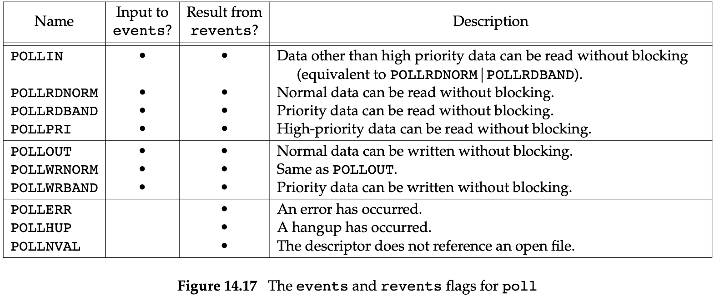
| 条件 | 描述 |
|---|---|
| timeout == -1 | 永远等待。当指定的描述符就绪或者捕捉到一个信号（返回 -1 并置 errno 为 EINTR）时返回。 |
| timeout == 0 | 不等待，立即返回。找出多个描述符的状态而不阻塞 poll 函数 |
| timeout > 0 | 等待指定的时间。超时返回 0 |
文件结束与挂起的区别
若从终端输入数据并且键入文件结束符，POLLINT 就会被打开，read 函数可以读取该文件结束符并返回 0。
POLLHUP 并不会再 revents 中打开。一般在从调制解调器中读取或者电话线挂断是，将会收到 POLLHUP 的通知。
select 与 poll 的可中断性
即使设置了 SA_RESTART 选项，在 select 和 poll 函数遭到中断时也是不重启的。但是在 SVR4 派生的系统中，select 与 poll 是自动重启的。考虑到移植到 SVR4 系统上应考虑调用 signal_intr() 以阻止系统调用重启动。
1 |
|
异步 IO
select 与 poll 都属于同步 IO。SIGPOLL 信号（System V 系统中）和 SIGIO 信号（BSD 系统中）可以用来实现异步 IO。
异步 IO 的限制：
- 不能在所有文件类型中使用，并且仅允许使用过一个信号
- 在多个描述符上使用异步 IO ，难于知晓信号相对应于哪个描述符。
System V 异步 IO
System V 中的异步 IO 仅能用在 STREAMS 设备和 STREAMS 管道中。使用信号 SIGPOLL 来实现。
启用 STREAMS 设备的方法：
通过调用 ioctl() ，并制定第二个参数（request） 为 I_SETSIG，第三个参数为图 12.18 所示的整数常量（定义在 stropts.h 头文件中）。
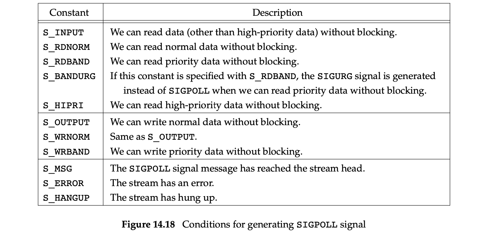
调用 ioctl 函数之前应该指定生成 SIGPOLL 信号的条件，并定义该信号的信号处理程序。
BSD 异步 IO
在 BSD 派生系统中使用 SIGIO 和 SIGURG 两个信号来实现异步 IO。SIGIO 用于生成异步 IO 的信号，SIGURG 用于通知进程：网络上带外数据已经到达。
接收 SIGIO 信号：
- 通过调用 signal 或者 sigaction 函数，建立 SIGIO 的信号处理程序
- 通过 fcntl 函数（设置 F_SETOWN 命令）设置进程 ID 或者进程组 ID 来接收有关该描述符的信号。
- 通过 fcntl 函数（设置 F_SETFL 命令，设置文件状态标志为 O_ASYNC）启用该描述符上的异步 IO。
第三步：对于 BSD 异步 IO 设备来说，这一步仅适用于终端或网络相关的描述符
对于 SIGURG 信号来说，需要执行第一二步。SIGURG 仅能用于支持带外数据的网络连接，比如 TCP 连接。
POSIX 异步 IO
POSIX 使用 AIO 控制块来描述 IO 操作，POSIX 中的异步 IO 通常用于实时系统中。
1 | struct aiocb { |
AIO 控制块中的 aio_lio_opcode 属性指定了操作类型（LIO_READ：读操作〈该 AIO 控制块会被传给 aio_read 处理〉，LIO_WRITE：写操作〈AIO 控制块会被 aio_write 函数处理〉，KIO_NOP：无操作）。
在具体的实现中，操作系统会限制未完成的异步 IO 操作数量。如下所示：
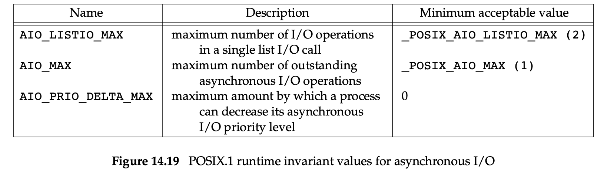
在运行中可以分别通过如下方式获取具体的值：
| Name | the way to obtain |
|---|---|
| AIO_LISTIO_MAX | sysconf(_SC_IO_LISTIO_MAX) |
| AIO_MAX | sysconf(_SC_AIO_MAX) |
| AIO_PRIO_DELTA_MAX | sysconf(_SC_AIO_PRIO_DELTA_MAX) |
1 | struct sigevent { |
sigev_notify 字段取值：
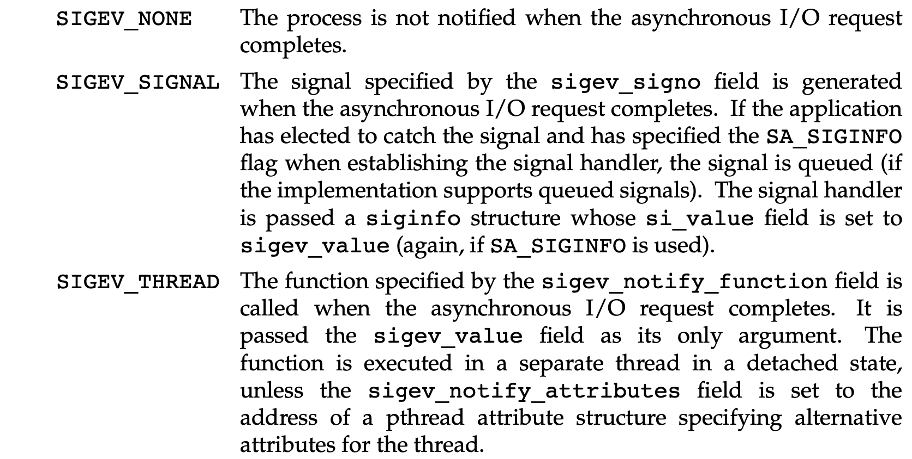
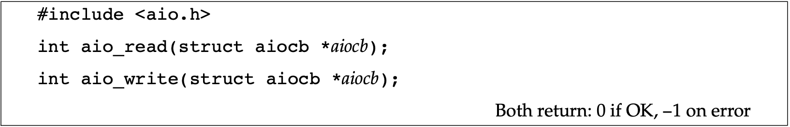
当 aio_read() 与 aio_write() 返回成功时，异步 IO 请求将被排队处理。其返回值与实际的 IO 操作并无关系。当 IO 操作挂起时，AIO 控制块以及缓冲数据对应的内存不能被重用，除非 IO 操作已经完成。
函数说明
对所有的挂起的异步写入提供无等待地一致性存储功能。
在安排了同步时 aio_fsync() 返回。在异步同步操作完成前，数据不会被持久化。AIO 控制块控制我们如何被通知。
参数说明
| 参数 | 说明 |
|---|---|
| aio_fildes | 指定了异步写入操作被同步的文件描述符 |
| op（设置了 O_DSYNC 标志） | 等价于调用 fdatasync() |
| op（设置了 O_SYNC 标志） | 等价于调用 fsync() |
函数说明
用于确定异步读写或同步操作的完成状态。
返回值说明
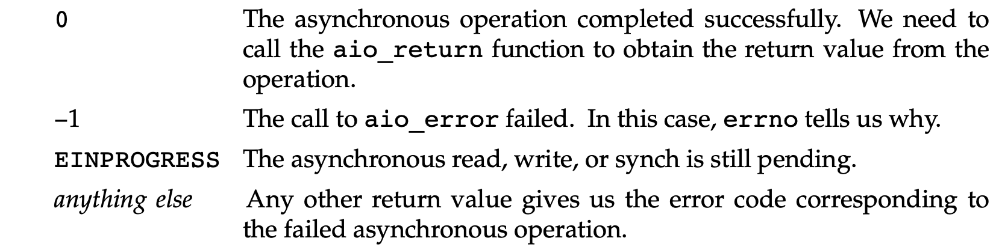
函数说明
获取已完成的异步操作的返回值。
在异步操作完成前应避免调用 aio_return()，否则结果将是未定义的。同时，也应避免每次异步 IO 操作后就调用一次 aio_return。一旦调用该函数，操作系统就会自由地释放包含 IO 操作返回值的记录。
返回值说明
若aio_return 出现内部错误，将返回 -1，并设置 errno；否则返回 write、read 或者 fsync 成功返回的结果。
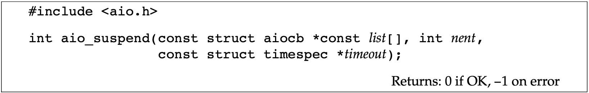
函数说明
执行异步 IO 操作后，转而处理其他任务而不阻塞。但当其他任务处理完毕后，异步 IO 操作仍未完成，则可以使用 aio_suspend 阻塞直到操作完成。若调用 aio_suspend 前所有的异步 IO 操作都完成，则该函数直接返回且不会阻塞。
返回值说明
引起 aio_suspend 函数返回的情况：
- 捕捉到信号，返回 -1 并置 errno 为 EINTR
- 超时时间过后无任何 IO 操作完成时，返回 -1 并置 errno 为 EAGAIN。
- 部分 IO 操作完成时，返回 0.
参数说明
- list 指向一个 AIO 控制块的数组。其中的空指针将被自动跳过，其他的元素指向已被用来初始化异步 IO 操作 AIO 控制块
- nent 为 list 数组的长度
函数说明
尝试（并不保证系统一定能取消所有正在进行的操作）取消未完成的异步 IO 操作。
在异步 IO 操作成功取消的 AIO 控制块上调用 aio_error() 会返回 ECANCELED 的错误。
当调用 aio_cancel() 失败不会更改对应的 AIO 控制块。
参数说明
fd：未完成的异步 IO 操作的文件描述符
aiocb：为 NULL，表示尝试取消对应文件的所有未完成的异步 IO 操作。否则尝试取消 AIO 控制块指定的某个异步 IO 操作。
返回值说明
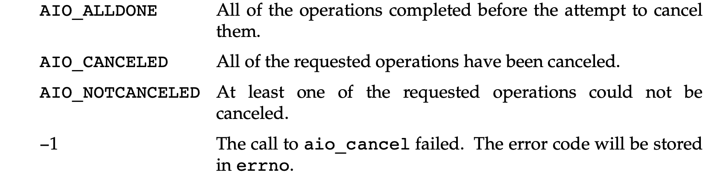
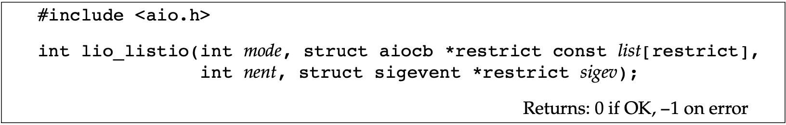
函数说明
用于提交一组由 AIO 控制块描述的 IO 请求。该函数以同步方式或异步方式下调用都可以。
参数说明
参数 mode 决定了 IO 是否是真正的异步。
当 mode == LIO_WAIT 时，参数 list 指定的所有 IO 操作都完成，lio_listio 函数才会返回。这时，参数 sigev 被自动忽略。
当 mode == LIO_NOWAIT 时，IO 请求一被放入队列就立即返回。当所有 IO 操作完成时，程序会异步收到通知（具体由参数 sigev 设置）。若不想被通知 sigev 可被设置为 NULL。注意：每个 AIO 控制块本身也可能启用了在各自操作完成时的异步通知。被 sigev 参数指定的异步通知是在此之外另加的，并且只会在所有的 IO 操作完成后发送。
参数 list 指向的 AIO 控制块数组指定了要运行的 IO 操作。为 NULL 的元素将被自动忽略。
参数 nent 为 list 数组的长度。
示例
将文件中的内容所有的 a-z 字符和 A-Z 字符向右偏移 13 位。
1 |
|
本示例并没有使用异步通知。若在 IO 操作进行时还有别的事情要做，那么额外的工作可以包含在 for 循环中。然而，若需要阻止这些额外的工作延迟翻译文件的任务，那么就需要使用异步通知。
多任务情况下，决定程序如何建构之前需要先考虑各个任务的优先级。
1 |
|
函数 readv and writev
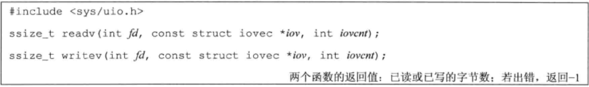
readv() 与 writev() 从 struct iovec 结构指向的多个缓冲区中读写数据。因此又称为散步读（satter read）和聚集写（gather write）。
1 | struct iovec { |
参数 iovcnt 表示 iov 数组的长度，其最大值受限于 IOV_MAX。
两个函数参数与 struct iovec 结构的关系：
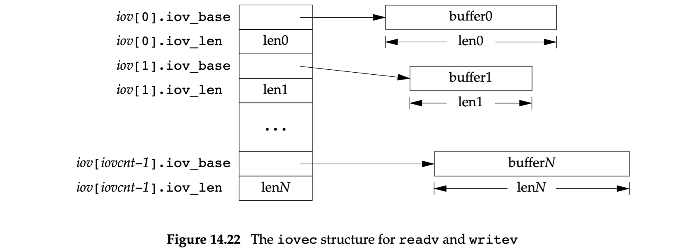
writev 函数的聚集输出数据的顺序是：iov[0] iov[1] 直至 iov[iovcnt-1]。writev 返回输出的字节综述，通常应等于所有缓冲区长度之和。writev 函数适用于写入大量数据的情况。
readv 函数按照同样的顺序散布到缓冲区中。它总是先填满一个缓冲区，再填写下一个。readv 函数返回读到的字节总数。若遇到文件尾端则返回 0。
函数 readn 和 writen
对于在管道、FIFO 以及某些设备（特别是终端和网络）有以下两种性质：
- 一次 read 操作所返回的数据可能少于所要求的数据，即使没有到文件末尾。
- 一次 write 操作的返回值可能少于指定输出的字节数。应继续写入余下的数据。
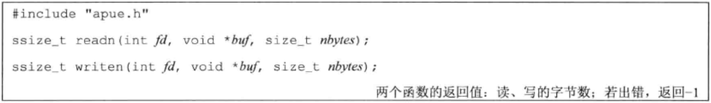
1 | // 按需多次调用 read / write 函数，读写 N 个字节。当发生错误时，返回已传输的数据量，而非错误。 |
1 |
|
内存映射 IO
内存映射可以将磁盘上的文件映射成内存中的一块区域。对该内存块的读写会自动作用到文件上。整个过程不涉及调用 read() 和 write()。
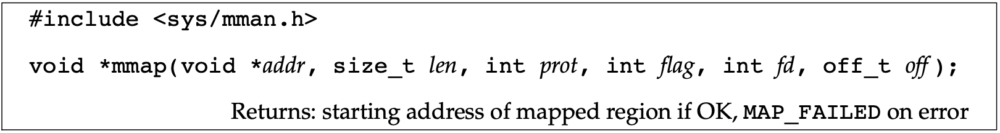
参数说明
| 参数名 | 说明 |
|---|---|
| addr | 内存映射区域的其实地址，通常设置为 0（系统分配） |
| fd | 将要被映射的文件描述符 |
| len | 映射的字节数 |
| off | 要映射字节在文件中的起始偏移量 |
| prot | 内存映射区域的保护模式。取值可以是图 14.25 的多个值按位或 |
| flag | 用于设置内存映射区的属性 |
prot 参数值域
在指定内存映射区的保护模式时，其访问权限不能超过文件 open() 时指定的访问权限。
flag 参数值域
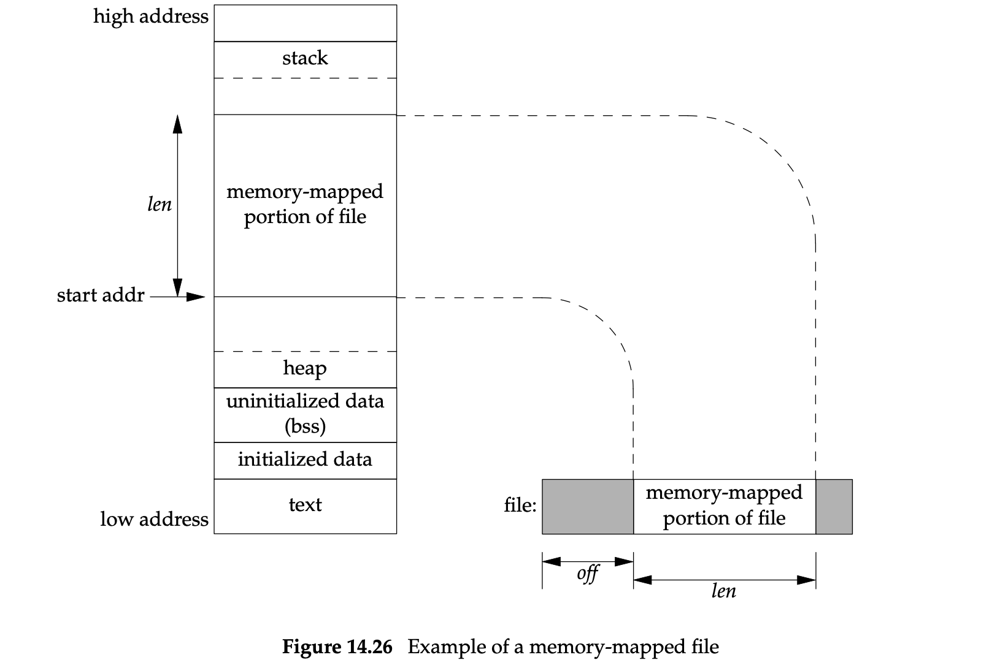
内存映射区在堆和栈之间（其他系统实现可能与此不同）。
| 取值 | 描述 |
|---|---|
| MAP_FIXED | 返回值必须为 addr。不推荐设定该值因为可移植性差。若未设置该标志且 addr 非 0 也只是内核将 addr 在哪儿设置映射区的一种建议，并不保证会使用锁要求的地址。addr 非 0 可以获得最大的可移植性 |
| MAP_SHARED | 描述本进程对映射区所进行的存储操作的配置。存储操作相当于对该文件的 write 调用。本标志与 MAP_PRIVATE 不能同时指定 |
| MAP_PRIVATE | 在内存映射区上的存储操作会创建映射文件的一个私有副本。所有后来对该映射区的引用都是引用该副本（此标志的一个用途是用于调试程序，它将程序文件的正文部分映射至内存存储区，但允许用户修改其中的指令。任何修改之影响程序文件的副本，而不影响原文件） |
参数 off 与 addr（若指定 MAP_FIXED 标志） 通常是系统虚拟内存页大小的整数倍。虚拟内存页大小可通过 sysconf(_SC_PAGESIZE) 或 sysconf(_SC_PAGE_SIZE) 获取。
假设文件大小为 12 B 系统虚拟内存页大小为 512 B 。当内存映射区分配 512 B，后面 500 B 将被设置为 0，用户可以修改这 500 B 的区域（并不会影响原文件）。因此 mmap() 不能用来追加文件内容。见图 14.27。
返回值说明
返回内存映射区域的起始地址。
发生在内存映射区上的信号
| 信号名称 | 发生时机 |
|---|---|
| SIGSEGV | 访问内存映射区，但其不可用时。如向只读的内存映射区写入就会触发该信号 |
| SIGBUS | 访问内存映射区某些无意义的部分。如内存映射区大小随文件大小变化而变化，在引用该内存区前，文件被其他进程 truncate 了，当本进程访问该内存区的 truncate 部分的内容时会收到 ISGBUS 信号 |
内存映射区的继承
由于子进程共用父进程的地址空间，因此 fork 的子进程会继承父进程的内存映射区，exec 启动的程序不会继承。

函数说明
更改映射的保护权限。
参数说明
| 参数名 | 说明 |
|---|---|
| prot | 同图 14.25 |
| addr | 空间大小应为系统虚拟内存页大小的整数倍 |
| len | addr 数组的长度 |
若内存映射区使用 MAP_SHARED 标志，被修改的内存页并不会立即写回到文件。具体操作是：内核守护进程会从 (a) 系统负载 (b) 数据丢失量限制的参数配置 两方面来决定刷新脏页的时机。
写入时是以内存页大小为单位进行写入，若一个页中仅修改了一个字节，那整个页也是要被写入到文件中的。
函数说明
用于将以 MAP_SHARED 模式创建的内存映射区中的修改刷新到对应文件中。类似于 fsync()，不同的是 msync 作用于内存映射区。
若映射是私有的，文件将不会被修改。
与其他内存映射函数一样，参数 addr 需要与页边界进行对齐。
参数说明
|||
|:—-:|:—-:|
|flags|用于某种程度地控制内存如何被刷新。|
|||
|||
| flags取值 | 描述 |
|---|---|
| MS_ASYNC | |
| MS_SYNC | 函数返回前一直等待写操作完成 |
| MS_INVALIDATE | 可选标志，丢弃未同步的页，有些实现会丢弃 addr 中所有的未修改的页 |
MS_ASYNC 与 MS_SYNC 必须指定其一。
函数说明
取消对内存映射区域的映射。另一种取消映射的情况发生在进程终止时。
【注意】：
调用该函数并不能将其中的数据写入到文件中。MAP_SHARED 的映射区是由内核虚拟内存算法来刷新的。
MAP_PRIVATE 的映射区在取消映射时所有在内存中的修改都将丢失。
1 | // 拷贝文件（cp） |